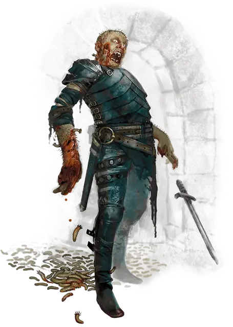

Рой трупных личинок
Swarm of Rot Grubs
Средний рой крошечных Зверей, без мировоззрения

Класс Доспеха 8
Хиты 22 (5к8)
Скорость 5 футов, лазая 5 футов
| мод | спас | ||
|---|---|---|---|
| СИЛ | 2 | −4 | −4 |
| ЛОВ | 7 | −2 | −2 |
| ТЕЛ | 10 | +0 | +0 |
| мод | спас | ||
|---|---|---|---|
| ИНТ | 1 | −5 | −5 |
| МДР | 2 | −4 | −4 |
| ХАР | 1 | −5 | −5 |
Уязвимость к урону огонь
Сопротивление урону колющий, рубящий
Иммунитет к состояниям окаменение, опутанность, сбивание с ног, захват, паралич, очарование, испуг
Чувства слепое зрение 10 футов, пассивное Восприятие 6
Опасность 1/2 (100 опыта)
Бонус мастерства +2
Среда обитания Болото, Подземье
Особенности
Рой. Рой может занимать пространство другого существа и наоборот, и рой может перемещаться через любое пространство, достаточно большое для Крошечной личинки. Рой не может восстанавливать хиты или получать временные хиты.
Действия
Укусы. . Рукопашная атака оружием: +0 к попаданию, досягаемость 0 футов, одно существо в пространстве роя. Попадание: 7 (2к6) колющего урона и цель должна преуспеть в спасброске Телосложения Сл 10, иначе станет отравленной. В конце каждого хода своего хода цель получает 3 (1к6) урона ядом. Всякий раз, когда отравленная цель получает урон огнём, цель может повторять спасбросок, оканчивая на себя этот эффект в случае успеха. Если отравленная цель заканчивает свой ход с 0 хитами, она умирает.
Описание
Трупные личинки – личинки размером с палец, которые едят живую или мёртвую плоть, хотя они могут выжить питаясь растениями. Они наводняют трупы и кучи гнилья и нападают на живых существ, потревоживших их. Вгрызаясь в плоть живого существа, трупная личинка, инстинктивно, проедает себе путь к жизненно важным органам.
Трупные личинки боятся пламени, а огонь - главное оружие против трупных личинок, как только они оказываются внутри тела. Магия, нейтрализующая яд, также может остановить их до того, как они убьют своего хозяина.
Одиночная трупная личинка
Трупные личинки представляют угрозу как отдельно, так и роем. У отдельной трупной личинки нет блока статистики.
Любое существо, которое входит в контакт с ней, должно пройти спасбросок Телосложения Сл 10. При провале спасброска, существо становится отравленным, так как трупная личинка вгрызается в его плоть.
Отравленное существо получает 3 (1к6) урона ядом в конце каждого своего хода. Всякий раз, когда отравленная цель получает урон огнём, цель может повторять спасбросок, оканчивая на себя этот эффект в случае успеха. Если отравленная цель заканчивает свой ход с 0 хитами, она умирает, поскольку трупная личинка убивает её.